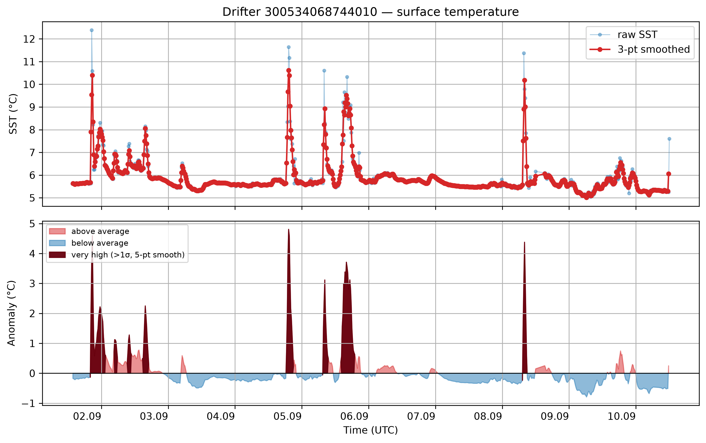
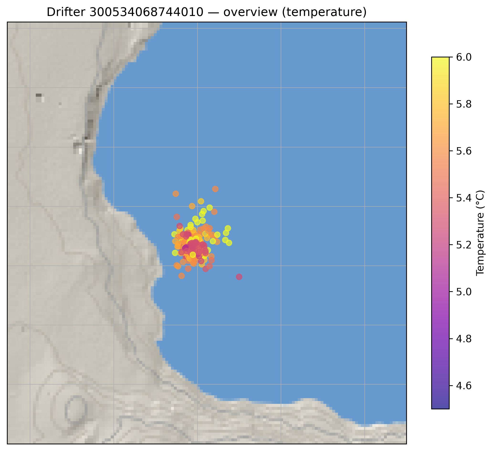
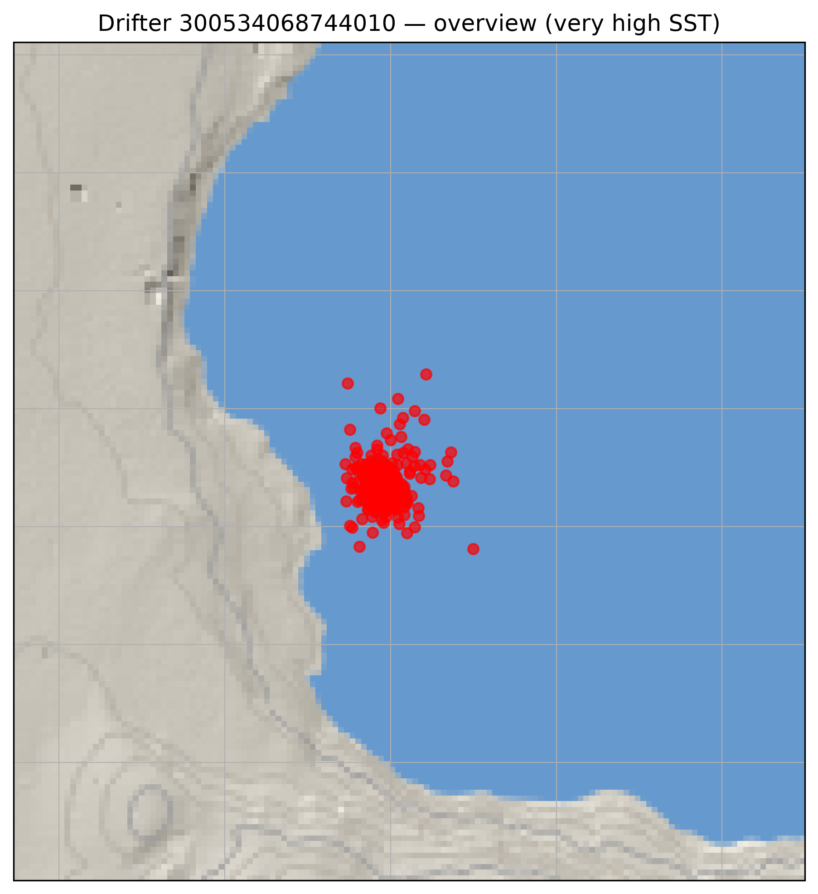
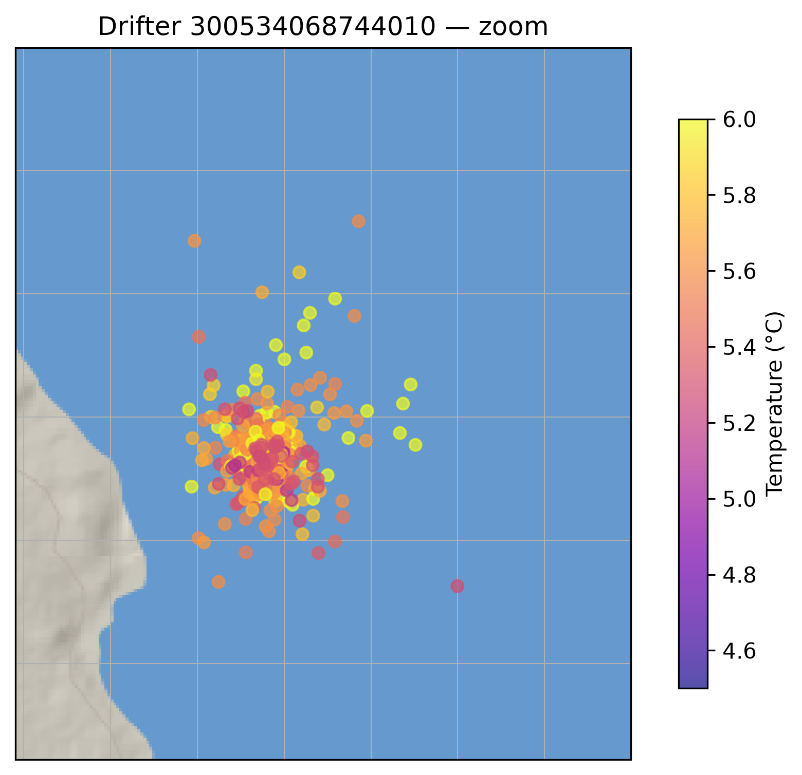
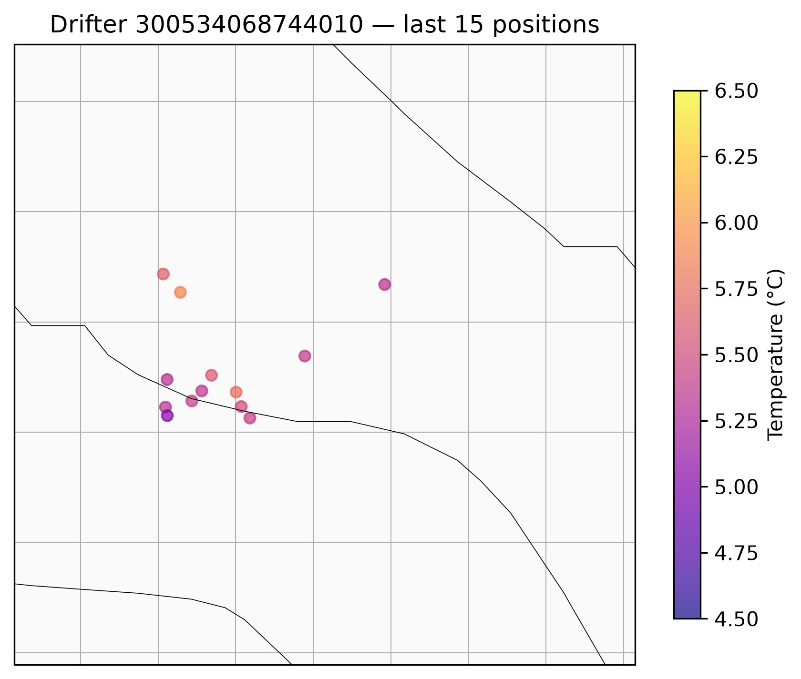

ASKJA Drifter — Live Status
Report generated 2026-09-10 13:26 UTC · refreshes automatically every 3 hours
Average SST over the last 3h of reported data: 5.48°C (13 readings, ending 2026-09-10 12:00 UTC).

Raw and smoothed sea surface temperature

Overview — temperature

Overview — very high SST locations
Overview — bathymetry contours

Zoom

Most recent positions